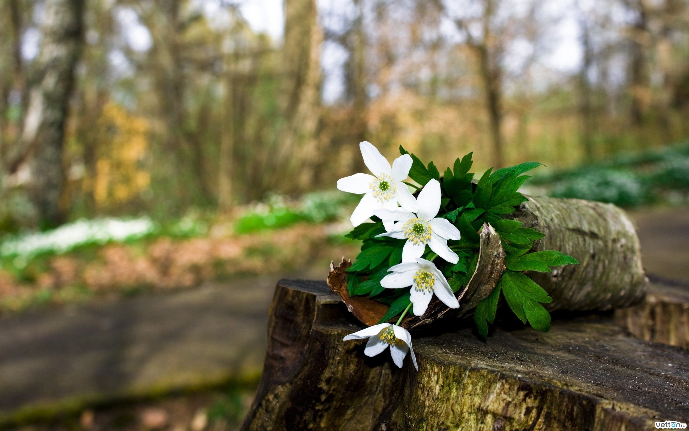

Flores para
siempre
Flores para
siempre{kind=link}
Girasol
Girasol es una planta herbácea de la familia asterácea, de nombre científico helianthus annuus,
que se caracteriza por tener flores amarillas, frutos comestibles y tallos robustos y erguidos.
Asimismo, del náhuatl recibe los nombres de chimalatl o chimalxóchitl, que significan “flor de escudo”.
Flores

Caption here
{kind=link}
Margaritas
Es una planta herbácea y perenne, perteneciente a la familia de las Asteraceae y a las flores nacionales de Europa
(segunda parte). Posee hojas grandes y espatuladas, de color verde oscuro y muy dentado en sus bordes.
Esta especie logra crecer de 10 a 15 centímetros, además presenta uno o más escapos por planta de unos 20 centímetros.
En el ápice del tallo, se encuentra una hermosa flor de 38 pétalos blancos, que mide entre 12 y 18 centímetros de diámetro.
Y en el centro de la flor se encuentran pequeños flósculos de color amarillo.
 Caption here
Caption here
Lirios
Los lirios nos permiten crear un ambiente colorido y natural en casa gracias a la variedad de colores y
formas que existen. Son flores exóticas, resistentes y con una fragancia que enamora. Y, por si fuera poco,
es una flor cargada de simbolismo. Te contamos por qué los lirios son uno de los ramos de flores que más gustan y
nos adentramos en el origen, los diferentes significados que se le atribuyen y en las diferentes variedades que existen.
Rosas
Las rosas rojas son el símbolo del amor por excelencia, los amantes, la pasión, el fuego...
Las rosas rojas tienen otros significados, más secundarios pero igual de representativos.
También simbolizan admiración y respeto.
Caption here
Astromelias
Se la conoce también como Lirios del Perú, Lirios de campo, e incluso por su origen, Lirio de los Incas.
Y es que esta planta rizomatosa de hermosas flores proviene de regiones agrestes,
montañosas con climas templados y frescos en la zona de la Cordillera de los Andes.
Fresas y Chocolates
Fresas
Además el chocolate es conocido por generar una sensación de bienestar por lo que su consumo mejora el estado de ánimo y combate el estrés.
Mientras que la fresa nos llena de energía y posee vitamina C que fortalece nuestro sistema inmunológico.
Peluches
Peluches
La relación emocional con los muñecos de peluche revelan los miedos de apego y la depresión que presentan pacientes adultos con trastorno límite de la personalidad.
Los animales de peluche tienen un efecto protector y al mismo tiempo beneficioso: proporcionan calidez, consuelo y cercanía.